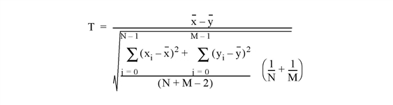

The TM_TEST function computes the Student’s T-statistic and the probability that two sample populations X and Y have significantly different means. X and Y may be of different lengths. The default assumption is that the data is drawn from populations with the same true variance. This type of test is often referred to as the t-means test.
The T-statistic for sample populations x and y with means x and y is defined as:

where x = ( x 0 , x 1 , x 2 , ..., x N-1 ) and y = ( y 0 , y 1 , y 2 ..., y M-1 )
This routine is written in the IDL language. Its source code can be found in the file tm_test.pro in the lib subdirectory of the IDL distribution.
Result = TM_TEST( X , Y [, / PAIRED ] [, / UNEQUAL ] )
The result is a two-element vector containing the T-statistic and its significance. The significance is a value in the interval [0.0, 1.0]; a small value (0.05 or 0.01) indicates that X and Y have significantly different means.
An n -element integer, single-, or double-precision floating-point vector.
An m -element integer, single-, or double-precision floating-point vector. If the PAIRED keyword is set, X and Y must have the same number of elements.
If this keyword is set, X and Y are assumed to be paired samples and must have the same number of elements.
If this keyword is set, X and Y are assumed to be from populations with unequal variances.
; Define two n-element sample populations.
X = [257, 208, 296, 324, 240, 246, 267, 311, 324, 323, 263, $
305, 270, 260, 251, 275, 288, 242, 304, 267]
Y = [201, 56, 185, 221, 165, 161, 182, 239, 278, 243, 197, $
271, 214, 216, 175, 192, 208, 150, 281, 196]
; Compute the Student's t-statistic and its significance assuming
; that X and Y belong to populations with the same true variance:
PRINT, TM_TEST(X, Y)
IDL prints:
5.52839 2.52455e-06
The result indicates that X and Y have significantly different means.
|
4.0 |
Introduced |